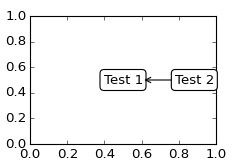
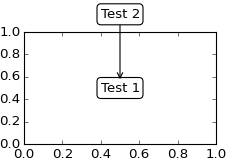

Do not proceed unless you already have read Annotating text,
text() and
annotate()!
Let’s start with a simple example.
(Source code, png, hires.png, pdf)
The text() function in the pyplot module (or
text method of the Axes class) takes bbox keyword argument, and when
given, a box around the text is drawn.
bbox_props = dict(boxstyle="rarrow,pad=0.3", fc="cyan", ec="b", lw=2)
t = ax.text(0, 0, "Direction", ha="center", va="center", rotation=45,
size=15,
bbox=bbox_props)
The patch object associated with the text can be accessed by:
bb = t.get_bbox_patch()
The return value is an instance of FancyBboxPatch and the patch properties like facecolor, edgewidth, etc. can be accessed and modified as usual. To change the shape of the box, use set_boxstyle method.
bb.set_boxstyle("rarrow", pad=0.6)
The arguments are the name of the box style with its attributes as keyword arguments. Currently, following box styles are implemented.
Class Name Attrs LArrow larrowpad=0.3 RArrow rarrowpad=0.3 Round roundpad=0.3,rounding_size=None Round4 round4pad=0.3,rounding_size=None Roundtooth roundtoothpad=0.3,tooth_size=None Sawtooth sawtoothpad=0.3,tooth_size=None Square squarepad=0.3
(Source code, png, hires.png, pdf)

Note that the attributes arguments can be specified within the style name with separating comma (this form can be used as “boxstyle” value of bbox argument when initializing the text instance)
bb.set_boxstyle("rarrow,pad=0.6")
The annotate() function in the pyplot module
(or annotate method of the Axes class) is used to draw an arrow
connecting two points on the plot.
ax.annotate("Annotation",
xy=(x1, y1), xycoords='data',
xytext=(x2, y2), textcoords='offset points',
)
This annotates a point at xy in the given coordinate (xycoords)
with the text at xytext given in textcoords. Often, the
annotated point is specified in the data coordinate and the annotating
text in offset points.
See annotate() for available coordinate systems.
An arrow connecting two point (xy & xytext) can be optionally drawn by
specifying the arrowprops argument. To draw only an arrow, use
empty string as the first argument.
ax.annotate("",
xy=(0.2, 0.2), xycoords='data',
xytext=(0.8, 0.8), textcoords='data',
arrowprops=dict(arrowstyle="->",
connectionstyle="arc3"),
)
(Source code, png, hires.png, pdf)

The arrow drawing takes a few steps.
connectionstyle key value.arrowstyle key value.(Source code, png, hires.png, pdf)

The creation of the connecting path between two points is controlled by
connectionstyle key and following styles are available.
Name Attrs angleangleA=90,angleB=0,rad=0.0 angle3angleA=90,angleB=0 arcangleA=0,angleB=0,armA=None,armB=None,rad=0.0 arc3rad=0.0 bararmA=0.0,armB=0.0,fraction=0.3,angle=None
Note that “3” in angle3 and arc3 is meant to indicate that the
resulting path is a quadratic spline segment (three control
points). As will be discussed below, some arrow style option only can
be used when the connecting path is a quadratic spline.
The behavior of each connection style is (limitedly) demonstrated in the
example below. (Warning : The behavior of the bar style is currently not
well defined, it may be changed in the future).
(Source code, png, hires.png, pdf)

The connecting path (after clipping and shrinking) is then mutated to
an arrow patch, according to the given arrowstyle.
Name Attrs -None ->head_length=0.4,head_width=0.2 -[widthB=1.0,lengthB=0.2,angleB=None |-|widthA=1.0,widthB=1.0 -|>head_length=0.4,head_width=0.2 <-head_length=0.4,head_width=0.2 <->head_length=0.4,head_width=0.2 <|-head_length=0.4,head_width=0.2 <|-|>head_length=0.4,head_width=0.2 fancyhead_length=0.4,head_width=0.4,tail_width=0.4 simplehead_length=0.5,head_width=0.5,tail_width=0.2 wedgetail_width=0.3,shrink_factor=0.5
(Source code, png, hires.png, pdf)

Some arrowstyles only work with connection style that generates a
quadratic-spline segment. They are fancy, simple, and wedge.
For these arrow styles, you must use “angle3” or “arc3” connection
style.
If the annotation string is given, the patchA is set to the bbox patch of the text by default.
(Source code, png, hires.png, pdf)

As in the text command, a box around the text can be drawn using
the bbox argument.
(Source code, png, hires.png, pdf)

By default, the starting point is set to the center of the text
extent. This can be adjusted with relpos key value. The values
are normalized to the extent of the text. For example, (0,0) means
lower-left corner and (1,1) means top-right.
(Source code, png, hires.png, pdf)
There are class of artist that can be placed at the anchored location
of the Axes. A common example is the legend. This type of artists can
be created by using the OffsetBox class. A few predefined classes are
available in mpl_toolkits.axes_grid.anchored_artists.
from mpl_toolkits.axes_grid.anchored_artists import AnchoredText
at = AnchoredText("Figure 1a",
prop=dict(size=8), frameon=True,
loc=2,
)
at.patch.set_boxstyle("round,pad=0.,rounding_size=0.2")
ax.add_artist(at)
(Source code, png, hires.png, pdf)

The loc keyword has same meaning as in the legend command.
A simple application is when the size of the artist (or collection of
artists) is known in pixel size during the time of creation. For
example, If you want to draw a circle with fixed size of 20 pixel x 20
pixel (radius = 10 pixel), you can utilize
AnchoredDrawingArea. The instance is created with a size of the
drawing area (in pixel). And user can add arbitrary artist to the
drawing area. Note that the extents of the artists that are added to
the drawing area has nothing to do with the placement of the drawing
area itself. The initial size only matters.
from mpl_toolkits.axes_grid.anchored_artists import AnchoredDrawingArea
ada = AnchoredDrawingArea(20, 20, 0, 0,
loc=1, pad=0., frameon=False)
p1 = Circle((10, 10), 10)
ada.drawing_area.add_artist(p1)
p2 = Circle((30, 10), 5, fc="r")
ada.drawing_area.add_artist(p2)
The artists that are added to the drawing area should not have transform set (they will be overridden) and the dimension of those artists are interpreted as a pixel coordinate, i.e., the radius of the circles in above example are 10 pixel and 5 pixel, respectively.
(Source code, png, hires.png, pdf)

Sometimes, you want to your artists scale with data coordinate (or
other coordinate than canvas pixel). You can use
AnchoredAuxTransformBox class. This is similar to
AnchoredDrawingArea except that the extent of the artist is
determined during the drawing time respecting the specified transform.
from mpl_toolkits.axes_grid.anchored_artists import AnchoredAuxTransformBox
box = AnchoredAuxTransformBox(ax.transData, loc=2)
el = Ellipse((0,0), width=0.1, height=0.4, angle=30) # in data coordinates!
box.drawing_area.add_artist(el)
The ellipse in the above example will have width and height corresponds to 0.1 and 0.4 in data coordinate and will be automatically scaled when the view limits of the axes change.
(Source code, png, hires.png, pdf)

As in the legend, the bbox_to_anchor argument can be set. Using the HPacker and VPacker, you can have an arrangement(?) of artist as in the legend (as a matter of fact, this is how the legend is created).
(Source code, png, hires.png, pdf)

Note that unlike the legend, the bbox_transform is set
to IdentityTransform by default.
The Annotation in matplotlib support several types of coordinate as described in Annotating text. For an advanced user who wants more control, it supports a few other options.
Transforminstance. For example,ax.annotate("Test", xy=(0.5, 0.5), xycoords=ax.transAxes)is identical to
ax.annotate("Test", xy=(0.5, 0.5), xycoords="axes fraction")With this, you can annotate a point in other axes.
ax1, ax2 = subplot(121), subplot(122) ax2.annotate("Test", xy=(0.5, 0.5), xycoords=ax1.transData, xytext=(0.5, 0.5), textcoords=ax2.transData, arrowprops=dict(arrowstyle="->"))
Artistinstance. The xy value (or xytext) is interpreted as a fractional coordinate of the bbox (return value of get_window_extent) of the artist.an1 = ax.annotate("Test 1", xy=(0.5, 0.5), xycoords="data", va="center", ha="center", bbox=dict(boxstyle="round", fc="w")) an2 = ax.annotate("Test 2", xy=(1, 0.5), xycoords=an1, # (1,0.5) of the an1's bbox xytext=(30,0), textcoords="offset points", va="center", ha="left", bbox=dict(boxstyle="round", fc="w"), arrowprops=dict(arrowstyle="->"))(Source code, png, hires.png, pdf)
Note that it is your responsibility that the extent of the coordinate artist (an1 in above example) is determined before an2 gets drawn. In most cases, it means that an2 needs to be drawn later than an1.
A callable object that returns an instance of either
BboxBaseorTransform. If a transform is returned, it is same as 1 and if bbox is returned, it is same as 2. The callable object should take a single argument of renderer instance. For example, following two commands give identical resultsan2 = ax.annotate("Test 2", xy=(1, 0.5), xycoords=an1, xytext=(30,0), textcoords="offset points") an2 = ax.annotate("Test 2", xy=(1, 0.5), xycoords=an1.get_window_extent, xytext=(30,0), textcoords="offset points")A tuple of two coordinate specification. The first item is for x-coordinate and the second is for y-coordinate. For example,
annotate("Test", xy=(0.5, 1), xycoords=("data", "axes fraction"))0.5 is in data coordinate, and 1 is in normalized axes coordinate. You may use an artist or transform as with a tuple. For example,
import matplotlib.pyplot as plt plt.figure(figsize=(3,2)) ax=plt.axes([0.1, 0.1, 0.8, 0.7]) an1 = ax.annotate("Test 1", xy=(0.5, 0.5), xycoords="data", va="center", ha="center", bbox=dict(boxstyle="round", fc="w")) an2 = ax.annotate("Test 2", xy=(0.5, 1.), xycoords=an1, xytext=(0.5,1.1), textcoords=(an1, "axes fraction"), va="bottom", ha="center", bbox=dict(boxstyle="round", fc="w"), arrowprops=dict(arrowstyle="->")) plt.show()(Source code, png, hires.png, pdf)
Sometimes, you want your annotation with some “offset points”, but not from the annotated point but from other point.
OffsetFromis a helper class for such case.import matplotlib.pyplot as plt plt.figure(figsize=(3,2)) ax=plt.axes([0.1, 0.1, 0.8, 0.7]) an1 = ax.annotate("Test 1", xy=(0.5, 0.5), xycoords="data", va="center", ha="center", bbox=dict(boxstyle="round", fc="w")) from matplotlib.text import OffsetFrom offset_from = OffsetFrom(an1, (0.5, 0)) an2 = ax.annotate("Test 2", xy=(0.1, 0.1), xycoords="data", xytext=(0, -10), textcoords=offset_from, # xytext is offset points from "xy=(0.5, 0), xycoords=an1" va="top", ha="center", bbox=dict(boxstyle="round", fc="w"), arrowprops=dict(arrowstyle="->")) plt.show()(Source code, png, hires.png, pdf)

You may take a look at this example pylab_examples example code: annotation_demo3.py.
The ConnectorPatch is like an annotation without a text. While the annotate function is recommended in most of situation, the ConnectorPatch is useful when you want to connect points in different axes.
from matplotlib.patches import ConnectionPatch
xy = (0.2, 0.2)
con = ConnectionPatch(xyA=xy, xyB=xy, coordsA="data", coordsB="data",
axesA=ax1, axesB=ax2)
ax2.add_artist(con)
The above code connects point xy in data coordinate of ax1 to
point xy int data coordinate of ax2. Here is a simple example.
(Source code, png, hires.png, pdf)
While the ConnectorPatch instance can be added to any axes, but you may want it to be added to the axes in the latter (?) of the axes drawing order to prevent overlap (?) by other axes.
mpl_toolkits.axes_grid.inset_locator defines some patch classes useful for interconnect two axes. Understanding the code requires some knowledge of how mpl’s transform works. But, utilizing it will be straight forward.
(Source code, png, hires.png, pdf)

You can use a custom box style. The value for the boxstyle can be a
callable object in following forms.:
def __call__(self, x0, y0, width, height, mutation_size,
aspect_ratio=1.):
"""
Given the location and size of the box, return the path of
the box around it.
- *x0*, *y0*, *width*, *height* : location and size of the box
- *mutation_size* : a reference scale for the mutation.
- *aspect_ratio* : aspect-ration for the mutation.
"""
path = ...
return path
Here is a complete example.
(Source code, png, hires.png, pdf)

However, it is recommended that you derive from the matplotlib.patches.BoxStyle._Base as demonstrated below.
from matplotlib.path import Path
from matplotlib.patches import BoxStyle
import matplotlib.pyplot as plt
# we may derive from matplotlib.patches.BoxStyle._Base class.
# You need to overide transmute method in this case.
class MyStyle(BoxStyle._Base):
"""
A simple box.
"""
def __init__(self, pad=0.3):
"""
The arguments need to be floating numbers and need to have
default values.
*pad*
amount of padding
"""
self.pad = pad
super(MyStyle, self).__init__()
def transmute(self, x0, y0, width, height, mutation_size):
"""
Given the location and size of the box, return the path of
the box around it.
- *x0*, *y0*, *width*, *height* : location and size of the box
- *mutation_size* : a reference scale for the mutation.
Often, the *mutation_size* is the font size of the text.
You don't need to worry about the rotation as it is
automatically taken care of.
"""
# padding
pad = mutation_size * self.pad
# width and height with padding added.
width, height = width + 2.*pad, \
height + 2.*pad,
# boundary of the padded box
x0, y0 = x0-pad, y0-pad,
x1, y1 = x0+width, y0 + height
cp = [(x0, y0),
(x1, y0), (x1, y1), (x0, y1),
(x0-pad, (y0+y1)/2.), (x0, y0),
(x0, y0)]
com = [Path.MOVETO,
Path.LINETO, Path.LINETO, Path.LINETO,
Path.LINETO, Path.LINETO,
Path.CLOSEPOLY]
path = Path(cp, com)
return path
# register the custom style
BoxStyle._style_list["angled"] = MyStyle
plt.figure(1, figsize=(3,3))
ax = plt.subplot(111)
ax.text(0.5, 0.5, "Test", size=30, va="center", ha="center", rotation=30,
bbox=dict(boxstyle="angled,pad=0.5", alpha=0.2))
del BoxStyle._style_list["angled"]
plt.show()
(Source code, png, hires.png, pdf)

Similarly, you can define custom ConnectionStyle and custom ArrowStyle.
See the source code of lib/matplotlib/patches.py and check
how each style class is defined.
{kind=link}
{kind=link}
{kind=link}
{kind=link}
{kind=link}
{kind=link}
{kind=link}
{kind=link}
{kind=link}
{kind=link}
{kind=link}
{kind=link}
{kind=link}
{kind=link}
{kind=link}
{kind=link}
{kind=link}
{kind=link}
{kind=link}
{kind=link}
{kind=link}
{kind=link}
{kind=link}
{kind=link}
{kind=link}
{kind=link}
{kind=link}
{kind=link}
{kind=link}
{kind=link}
{kind=link}
{kind=link}
{kind=link}
{kind=link}
{kind=link}
{kind=link}
{kind=link}
{kind=link}
{kind=link}
{kind=link}